- Los Ángeles
- El Mal Querer
- Motomami
- RR
- Premio Grammy Latino al Álbum del Año - 2022 Motomami • 2019 El Mal Querer
- Premio Grammy Al mejor Álbum de Rock, Urbano o Alternativo Latino - 2023 Motomami • 2020 El Mal Querer
- Último lanzamiento
- Mi favorita
- La primera que escuché
- Vogue julio, fotografiada por Peter Lindbergh
- GQ España, Mayo
- Rolling Stone
- ELLE
ÁLBUMES

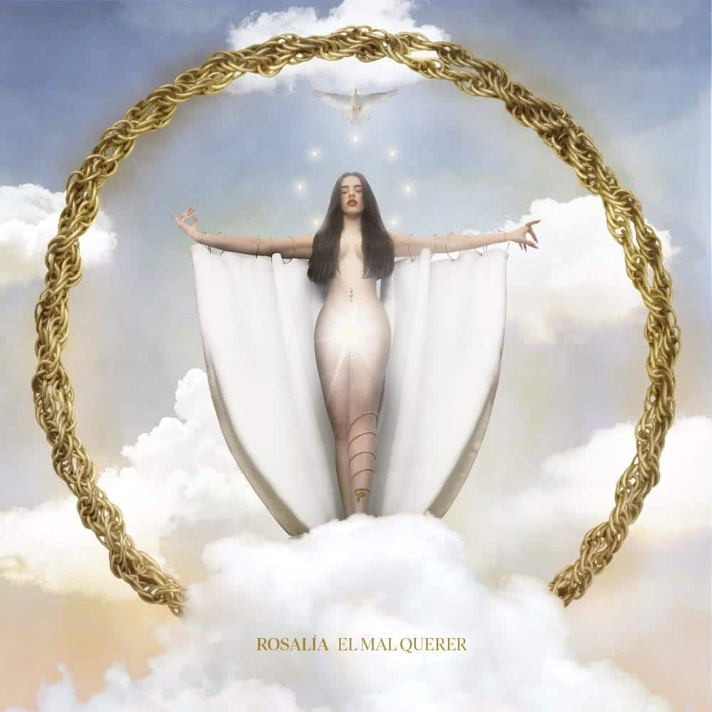
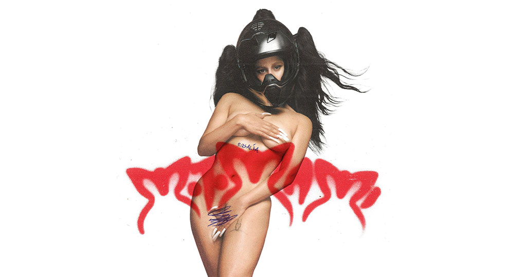

ÚLTIMOS 2 PREMIOS
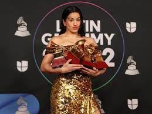
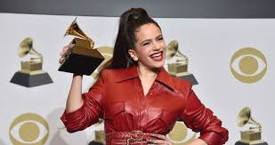
CANCIONES
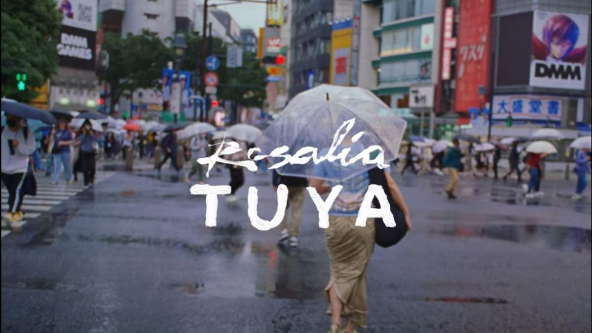
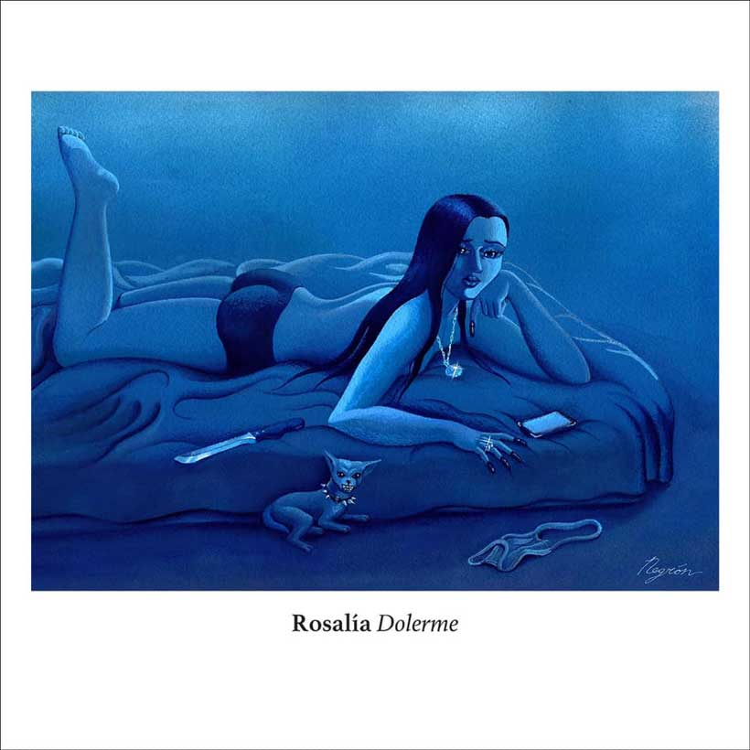
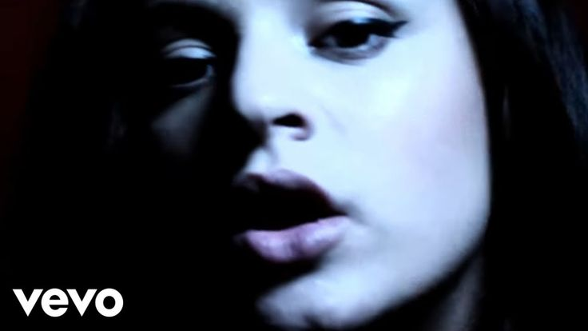
PORTADAS EN REVISTAS IMPORTANTES
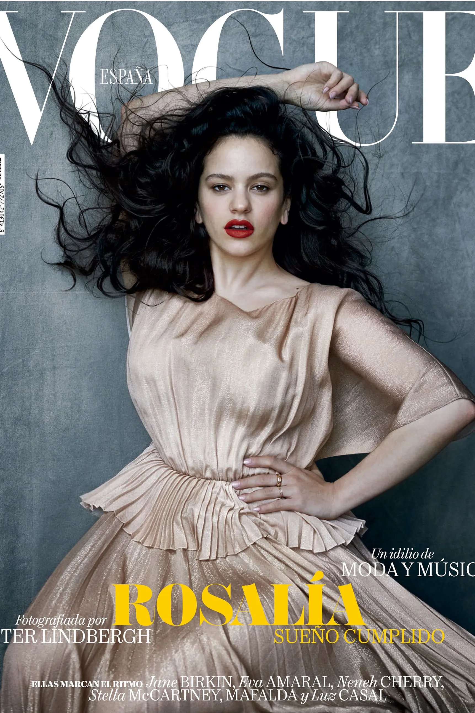
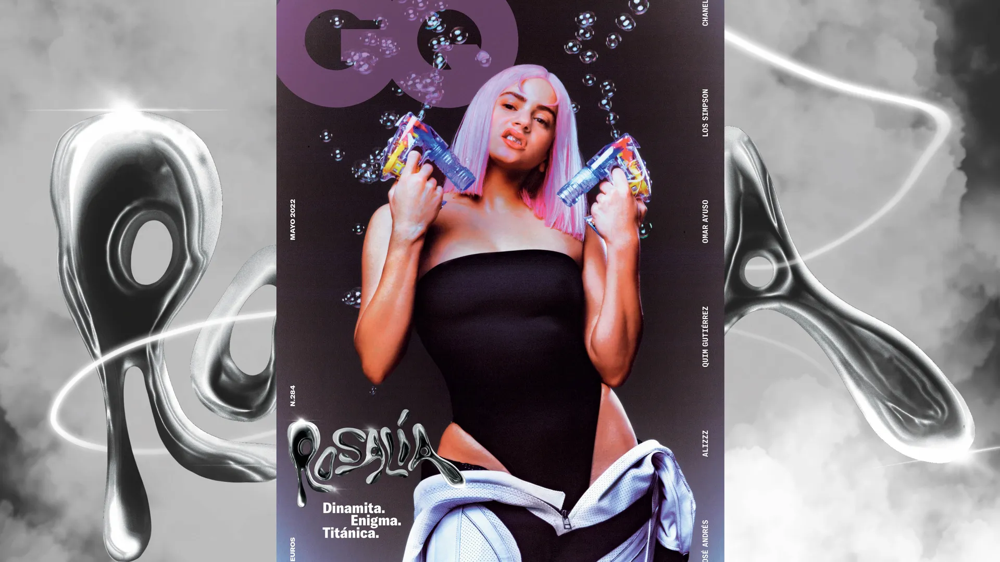
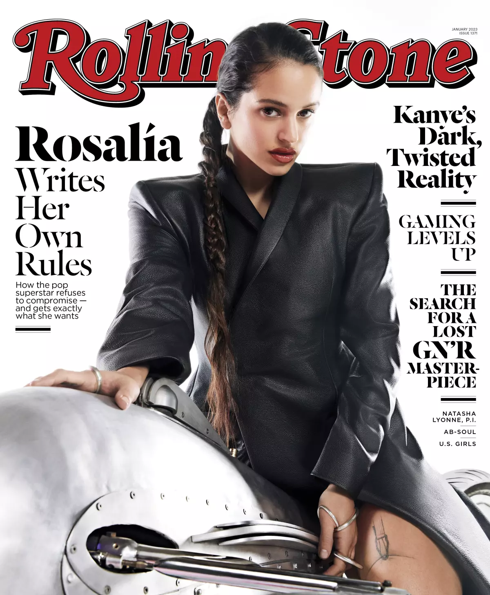
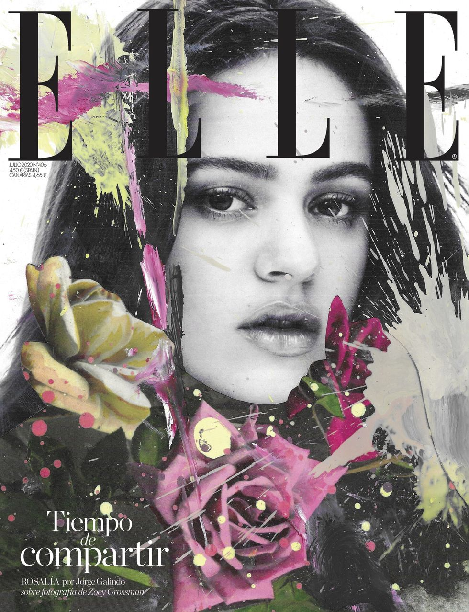